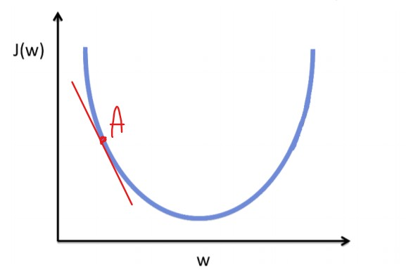
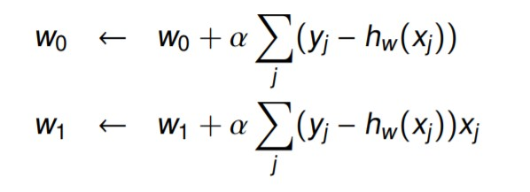
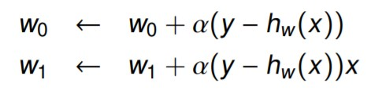
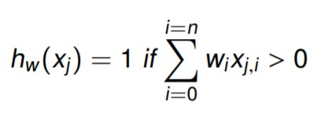
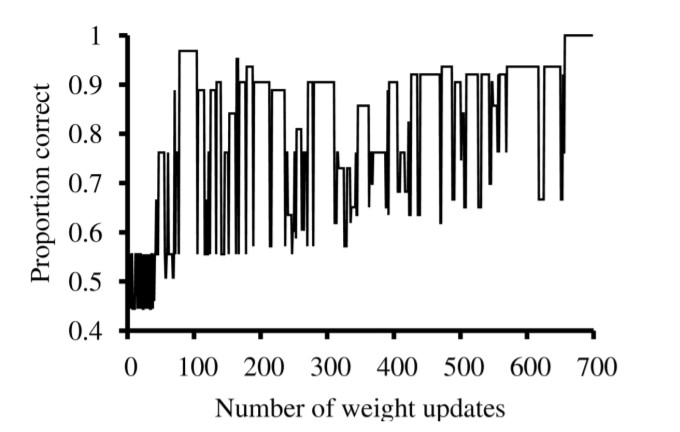
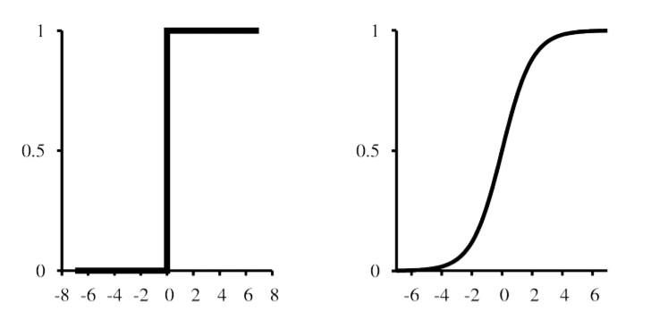

1 - Introduction
Supervised Learning
Generalisation: we want our model to generalise because of the long tail problem
- Classification or Pattern Recognition (Virginica, Setosa, Versicolor)
- Regression (1 to 10)
- Ordinal Regression: Elements are discrete (grades A to F), but they are in order (imagine a regression and then you do the batching).
Given a function f(x) = y [i.e. a function which maps our inputs to the right output], we want to create an approximation function denoted as
= (x)
We do not map the function to an exact output, rather, we use probability in the form:
the probability of being in each class, given the input and the set of training data
The previous formula is the same as . The latter only specifies the model used (M), but the result is the same.
Given the probability notion, the prediction formula is:
c is the class, and we repeat probability for all the classes in C (note: c (lowercase) is the class, C (capital) is the set of all the classes)
In unsupervised learning you want to find the probability of
p(x| D)
Note: that you find a multivariate distribution as opposed to supervised learning probability.
In Clustering, as we want to find the right K we use the formula:
K = argmaxk p(K | D)
A model is said to be parametric when we make assumptions about the data.
e.g. In a clustering model, if we make the assumption about the number of clusters and that each cluster has a Gaussian distribution, the model is parametric. Or in regression, if we define the shape of the formula (e.g. x0 + ax1 + bx2), the model can update the coefficients, but not the amount of parameters.
non-parametric models are more flexible and but take much longer to compute.
parametric models take much less but may be biased, and so more inaccurate.
Misclassification rate = (or 1 - accuracy)
Accuracy =
Precision = [or P(v | t) ]
Recall = [or P(t | v) ]
Also called sensitivity or true positive rate
The F score
The F1 (or simply F) score is simply the formula:
F1 =
The formula can use different values to weight precision differently:
F = (1 +
F2 and F0.5 are also commonly used:
- β = 2 weights recall higher
- β = 0.5 weights precision higher.
ROC Curve (receiver operating characteristic)
Given the formula to classify inputs in 2 possible classes:

We plot pairs of TP and FP (as we vary the threshold)

- Dotted line is performance of a random classifier (on average)
- For a good system, the graph climbs steeply on the left side.
- Area under the curve is related to the probability that the classifier will correctly classify a randomly chosen example
If the data is unbalanced, you may want to replace the Specificity with the Precision
As data is often unbalanced in the real world, and accuracy performs poorly on unbalanced data, we prefer Precision and Recall to Accuracy.
2 - Decision Trees
Plurality Classification
Using a decision tree you may end up in a leaf node with no examples. In such a case you can use the Plurality Classification (the best guess is based on the parent node).
- could be majority, ie., Yes if most examples at the parent node are classified “Yes”.
- could be random pick, weighted by ratio of examples at parent node (for the weight, think of the example of boosting).
- could be a probability, based on the ratio of examples at parent node
Another situation could be that you still have examples, which are not homogeneous, but no more features to use. Again you can use the plurality classification, but on the node itself rather than the parent node.
Impurity Measures
To measure the impurity of a state there exist different techniques
Entropy
The formula
where n is the number of classes in that node
expresses the entropy of a state. It ranges from 0 (homogeneous, perfect) to 1 (heterogeneous, very bad).

Information Gain
Comparing the entropy of a state with its parent node, we can tell how much we improved, or how much information we gained (information gain).
Given the feature used to split the state into subsets (each is a new branch with its own entropy):
The issue with the information gain formula is the bias. Gain favours features that have a lot of values (the name of a restaurant which is unique, but technically irrelevant, is subject to high bias and uniquely identify each case).
The solution is to introduce a metric which penalises features with many values. This is the Split Information formula:
Now, we can calculate the final formula that we use:
Note: when the splitInformation increases, the GainRatio is smaller, so features with many values are less relevant.
Gini
Gini impurity is the probability of mislabelling a randomly selected example.
It ranges from 0 (homogeneous) to 0.5 (heterogeneous).
0.5 if there are only 2 classes, otherwise it may be bigger.
Given a set of classes , Gini index is given by the probability that a random example belongs to class () times the probability it would be misclassified ()
e.g.

Gini impurity is derived from the formula:
The lowest the Gini impurity, the better.
Tree pruning
A tree overfits another tree when error is smaller on the training set, but larger on the test set than .
There are 2 options:
- Stop training at some point;
- Allow for full training (possible overfit) and then prune [generally performs better than the other option].
Reduced Error Pruning
For each branch:
- prune that branch
- turn its root into a leaf, and
- test the tree without it (you basically do plurality classification).
If after the prune the tree performs better on some validation (or development) set, keep it pruned. Otherwise go back to the previous tree state.
Stop this process when no improvements can be made.
Rule post-pruning
In case you have a small dataset, you want to approach the problem differently. The rule post-pruning is a variant of reduced error pruning which considers each node as a logical comparison and for nodes different from the root, these comparisons are joint together using AND logical operators.
This comparisons are called rules and the tree creates one for each leaf.
Preconditions may be removed from these rules if they increase accuracy.
These rules are then applied in order based on their accuracy.
Side notes: the tree we analysed is called ID3, other variants are C4.5 and CART.
Linear Regression
Note that alpha is negative when we consider the derivative, but positive when we consider the squared error
The derivative indicates the slop:
- if the slop is negative, the converge comes by increasing
 J(w) indicates the Error.In this case, when = A, the derivative has a negative slop, so we increase .
There exist 2 gradient descent algorithms:
-
batch gradient descent:
guaranteed to converge, but slow as it computes the error on all the inputs together.
 -
stochastic gradient descente
much faster, but updates on one input at the time, hence, if learning rate is constant, may not converge. Can often be made to converge by decreasing the learning rate over time.

note that, for both the approaches (in the pics) the first formula updates w, hence there is no involved. However, having x0 = 1 creates 2 parallel vectors w, x of equal length.
The final function, the one that will map the input x to a predicted y is:
This function is called univariate as there is just one input variable (x).
Multivariate Regression
In the case of many features, so many Xs, we have a so called multivariate regression. The procedure is the same, so we use gradient descent, but the formula now takes into account that there are different features:

With multivariate regression we have to worry about overfitting, so we take the complexity of the model into account.
To do so, we add a so called regularisation term to the loss function

Linear Classifier (linearly separable data)
Suppose that instead of a function which predicts a numerical output (regression function), we want to predict the input labels (classification).To do se, we use a discriminant function, in this case, we are looking at a linear classifier(classes are linearly separable).
The result is a inequality such as:
[ Note that x2 is not x2, rather, the feature no 2. ]

or
To update w we use the same technique of updating the weights based on the error, and it is common to use the stochastic gradient descent (which explains why error is so unstable during the learning process).

With standard linear regressions, this boundary is very hard and an input is labelled either classes with confidence = 100%.
The logistic curve (Logistic Regression), instead, assigns a percentage score which is not that drastic.

Even though we call it [logistic] regression, it's in fact a classifier.
Logistic Function:
Logistic functions may use the L2 formula for the loss function, however, the cross-entropy loss (or negative likelihood loss) is a better fit.
It is better because it allows us to find solutions that are better, i.e. it allows us to find better model parameters.
If we have only two discrete classes , this is a Bernoulli distribution, so we can rewrite the formula as :
= h(x)
Then we turn this formula into a likelihood:
Finally we turn this into a loss function by changing the sign:
When labels y and
Ensembling
A single predictor model could present some error. To reduce it, we can combine multiple predictor models (using different techniques of course) so that each of them "votes", and the prediction is equal to the majority of the votes.
Boosting
Boosting is a type of ensembling. Samples come with a weight, and the higher the weight, the more important is the sample during training.
It works this way:
- Starts with all examples of equal weight, and learn a classifier h1.
- Test it.
- Increase the weights of the misclassified examples and learn a new classifier h2.
- Repeat.
- Final ensemble is the combination of all the classifiers, weighted by how well they perform on the training set.
AdaBoosting
A commonly used boosting algorithm is the AdaBoosting.
Given an initial classifier that is slightly better than random (weak model), AdaBoost can generate an ensemble that will perfectly classify the training set.
Bagging
Bagging create multiple training sets from the original training set and uses them to generate multiple classifiers that are ensembled together.
Ensembling results can be combined using voting, or averaging, or weighting.
Random Forest
Makes use of bagging applied to decision trees (using bagged training subsets). PLUS, a random selection of features is used for each tree in order to push decision boundaries away from each other.
Random sub-space method
Is the technique used to split the training set into multiple subsets by using random features. This technique is used for Random Forests, but other algorithms make us of it as well.
In essence, you do not just split the training set X_train, but you also split the features that compose it, leaving some of them out. [If I got this right].
3 - Bayes
We are in the context of a classification problem. D is the data we are provided with and h is a possible label we may output as a prediction.
Bayes Theorem:
This formula is the basis for a learning algorithm that calculates the posterior () of different (not necessarily binary) and outputs the one with the highest probability.
To output it, we use the Maximum a posteriori (MAP) hypothesis:
1) = arg max
for each .
Using the Bayes theorem, you get:
2) = arg max
But as we are looking for the max value, and D is constant, we can remove from the equation, so:
3) = arg max
In some cases, we assume that every hypothesis is equally likely a priori (), so
4) = arg max
This way, we effectively only calculate the maximum likelihood.
Naive Bayes Classifier
Naive Bayes (NB) classifier is a practical approach to Bayesian Learning.
It is simple, resistant to overfitting, and can be very useful in practice.
Consider:
- xi: a data input made of features
- V: the set of value that a prediction (y, or f(x)) can assume
so each v is a value that our prediction y may assume.
Given this, a new instance xi is classified as:
argmax
for each
which, by the previous transformations, can be written as:
argmax vv
The above formula is what we apply during the training.
P(v) can be calculated as the number of times vi appears in the training set.
Similarly v$_i) can be calculated as the proportion of inputs (a) that produce output vi
i.e. given all the inputs labelled vi, how many have the same feature-values of a
However, when there are many features in the input, P(a| vi) can be very difficult to calculate as a lot of data is required to make good predictions.
e.g. in spam filtering each word, and possible combination, make up a feature
The Naive Bayes classifier makes 2 assumptions:
- the order of the features does not matter (when possible)
in spam filtering, the position of a word inside the e-mail does not make a difference
- features are conditionally independent given v.
feature a1 does not affect nor depends on feature ai
So:
vv
Now, the final function we get is
argmax vv
When the bayesian assumptions are correct, vNB = vMAP
When they are not, NB still holds good solutions.
In the tennis example, we would have
argmax
The results, due to the many multiplications, are very small numbers, and the risk in to run into a underflow error due to machine limitations.
To fix this, we can use the same function, but with we consider the log. Applying the log properties, the final formula is:
argmax (logv logv)
 Which means that everything is dependant on the data.
Which means that everything is dependant on the data.
The naive bayes we have seen deals with concrete values, but using normal distribution, it can deal with real values as well:
v
- is the mean; and
- is the variance of a feature of class v
m-estimate
So far we computed probabilities by just counting. Estimated as
- s total number of cases where B = b; and
- is the number of those cases where A = a
This is a good estimator, but when there are a few samples (which happens when is close to 0), there is high risk of overfitting.
To fix this, we introduce a couple of variables:
- and are as before.
- is a prior estimate (before taking any data into account). Its value typically is if the feature has values.
- is a constant, equivalent sample size, a weight given to the prior.
Gaussian Mixture Model
Anomaly detection
One way to use probabilistic prediction, is anomaly detection.
You create an unsupervised model trained by p(x | D), and then for every unseen data x', you calculate p(x') < to detect anomalies.
Each feature x of x may be modelled as a Gaussian distribution (mean and variance).
But what happens when there is no perfect Gaussian distribution, but the distribution is the mixture of several Gaussian distributions?

Given K base distributions (of any type, not necessarily Gaussian), and a respective weight :
That is, the probability of an element xi is the sum of the weighted () probabilities assigned to xi by each of the probability models in the mixture.
A mixture model can be:
- univariate, like the one in the picture. This does not mean there exists only one gaussian distribution, rather, that each gaussian distribution considers only 1 feature, as such can be represented in a 2D graph.

- multivariate, need at least a 3D space, is good to spot correlations between features, but is heavier to compute due to the covariance matrix (n x n).

In the case of multivariate mixture models, we need a number of samples much greater than the amount of features.
Note: that in the univariate, X is not bold, as it contains only one feature, whereas for the multivariate is bold.
Gaussian mixture models estimation
To generate a mixture model:
- Assume that D is generated by a mixture model (more Gaussian models).
- First, pick the distribution with equal probability
- Then pick a value according to the distribution.
- Repeat.
The output should look this:

Expectation Maximisation (EM) algorithm.
Suppose the opposite now, that is, you have the model and want to recover the Gaussian (estimate the parameters)?
NOTE: for the sake of simplicity, we will assume that each gaussian has the same variance.
- we want to learn a hypothesis that describes the means of each distribution such that is maximum.
- Maximum likelihood hypothesis, hML
is what we want to find.
The solution would be pretty easy if there is just one gaussian curve (ML = sum of each xi / len(x)), or if we knew which distribution each xi comes from.
As neither of these is the case, we have a hidden variable z that is which distribution each x comes from.
We can store each xi as a tuple where each z denotes a distribution. If zi = 1, then x belongs to distribution "i" with probability 100%. Being a probabilistic distribution, however, z is normally between 0 and 1.
We can use the Expectation Maximisation algorithm to find the means of the Gaussians.
Steps:
- Generate k random models (i.e, generate k random means ). This will be our hypothesis h, so ;
- Calculate the expected value E[zij] of each hidden variable zij given the hypothesis ;
- Calculate a new maximum likelihood hypothesis assuming that each zij takes its expected value E[zij]. In other words, update the means based on the new data (for the sake of simplicity, all the priors probability are constants and can be taken out of the equations). Remember: each x contributes to each model, but it is a weighted contribution;
- Stop when the update is smaller than a set threshold, or no further improvement happened from the previous state ().
Step 2:

E[zij] is the probability that xi was generated by the jth normal distribution.
The formula is the probability density of a Gaussian distribution.
Step 3:

Eventually, what we want to achieve is correctness over the hypothesis . As this is what we refine, is a parameter, which we also define as . In our case, we assumed that all the models had the same variance , so , but when the models have different variance, the correct formula is
K-means assign a cluster to each data point with z = 0 OR 1, this is called Hard clustering. EM, instead, uses probability, meaning there is no hard boundary which splits the data, so it is called Soft clustering.
4 - Markov Models
The Markov assumption states that the probability of reaching a state only depends on the previous states.
We make this assumption to simplify computations and reduce the number of statistics collected. Suppose we have the weather ({rainy | cloudy}) for today that depends on the weather of the past 10 days. Collecting data for the past 10 days is not an issue, but for the model to be good, we require data at least 210 big (1 sample for each combination) and the computations would be massively expensive.
A model is said to be nth order Markovian, where n is the number of previous states considered as part of the event.
If we consider only one (immediate) previous state, we have a first order Markovian.
Suppose we are making weather predictions, w = weather {rainy | cloudy}, t = time:
first order markovian =
third order markovian =
When not specified, the Markov assumptions refers to a first order.
Given the Markov assumption:
If we make a prediction on the weather by observing the past weather (that is, we have access to the data) we are calculating a transition probability
From this data, we can create an automaton which we will call Markov Chain or markov model.

However, if I do not have direct access to the data (Hidden Markov model) and try to infer it from other sources (people carrying an umbrella), I am computing an Emission probability (or Observation likelihood)
A hidden Markov model (HMM), is a model where you have observations as input, and you can talk about both observations and hidden variables which are the cause of the observations.
In the first case (transition prob.), the data can be unambiguously observed, whereas in the second case, it is inferred.

The issue is that there's no one-to-one mapping from a hidden variable to its observation (the person may carry an umbrella but it is not raining outside).
By convention, 2 more states are added to the hidden sequence:
- : a starting state prior to
- : a final state which comes after
Formal definition of HMM
In this model we have 4 variables:
-
Se which indicates the set of N hidden states. This is length N, but including the special states and becomes N+2
the set of values that each hidden state may assume. e.g. s1 = {rainy, cloudy}.
-
K: an output "alphabet" of M observations (vocabulary). Here as well we have a starting and final observations k0 and kf, which means K length = M+2
the set of values each observation state may assume. e.g k1 = {umbrella, ¬umbrella}
-
X: a sequence of T states, each one drawn from Se
-
O: a sequence of T observations, each one drawn from K
Note X and O have the same length, and that Oi (or Xi) refers to an element of that sequence
The first order HMM respects the following rules:

Then we need some matrixes:
-
A: a state transition probability matrix of size (N + 2) (N + 2).

where aij = P(Xt = sj | Xt-1 = si) indicates the probability of going from state to state . The sum of any row is always 1.
Note that:
- first column is empty (we dont consider the transition from an existing state to the initial state s0)
- last row is empty (we dont consider the transition from the final state to another state)
- top right corner is empty (we dont consider the transition from the initial state to the final state)
Alternatively, you can consider any of these as having probability 0.
-
B: an emission probability matrix of size (M + 2) x (N + 2).

The special values k0 and kf may only be emitted by the starting and the end state, so their probability is 1 at those states, and 0 at all the others.
Our HMM is defined by its parameters = (A, B)
Let's image a dice game with 2 dices:
- F: a fair dice, where each face comes with probability;
- L: a loaded dice.
Given a training set (derived from observations), we can calculate our A and B matrix:

The last point refers to the possibility of having a specific combination = 0. As it could be the case that such an event has low probability (hence it doesnt appear in our training set), but not 0, we can add 1 observations to each possible combination.
Here is an example (we do not that smoothing here)

In the Emission matrix, we compute the probability of an outcome given the dice (or the special state) used.
As you can see, s refers to the actual value, and X to that state
E.g. the transition from s0 to F at time 0 1:
- p(X1 = F | X0 = s0)
that is, how many times I reached F from s0, over the times I made a transition from s0 to any state.
Then we compute the transition matrix where we do not care about the observation, but only on the transition from one state (dice used) to another.
As you can see, O is the tuple indicating the state involved in the transition, and k indicates the values (X) that those states assume
E.g. the emission of 1 given L:
- p(Ot = 1 | Xt = L)
that is, how many times the observation was 1 with dice L, over all the times L was used.
HMM can be used in 4 different ways:

Decoding
In the casino example, we want the HMM to find out when the fair dice was out, and when the loaded dice was out.
The X series that we want to maximise () is equal to:

How to find this?
Brute force would be effective, but too slow. The computations are to the power of states O(NT).
An alternative is to use the Verbati algorithm. This approach breaks the problem into sub-problems, saves the answers into a data structure, and re-accesses them if the same problem is encountered later on.
The Verbati algorithm is a dynamic programming application, as such 2 conditions must hold:
-
Optimal substructure property
An optimal state sequence X1 ... Xj ... XT contains inside it the sequence X1 ... Xj, which is also optimal -
Overlapping subsolutions property
If both Xt and Xu are on the optimal path, with t < u, then the calculation of the probability for being in state Xt is part of each of the many calculations for being in state Xu (the path s u passes by t every time).
As we are using a first order HMM, we need to store only the probability of reaching a state a time t from time t+1. So we calculate the probability of reaching each state only once, then memoise this probability in a Dynamic Programming table.
This approach running time is O(N2 T)
The procedure is:

Note: for state s0 (t = 0) we cannot compute , hence, we just use the emission probability: = bj(Ot) = b0(k0)
In other words, we are given the observation k at time t and we want to find out the most likely state that generated it (in the casino example, the state is the state of the dice Loaded or Fair). Then, the probability of being in state j at time t is found by maximising the product probabilities of:
- being in a state i at the previous time (t - 1)
- transitioning from state i to state j
- emitting observation k at time t from state j
We use to denote the shortest path, but to make our life easier, we also want to store which previous state composes such a path.
Hence, we introduce the variable . The formula looks the same as for , so (t) = max((t - 1) aij bj(Ot) ).
At time t = 1, the only previous state is s0, so F(1) = L(1) = 0, but starting from time t = 2, there are 2 possible previous state (L and F):

Even if eventually at each time we select just one state, we still have to compute AND KEEP both values because it may be the case that, at some point later on, the one state that we now consider as the best one may not be anymore.
The above phenomenon is explained by the fact that we want to find the sequence of states that maximises the probability of the sequence of observations in input.
Statistical Significance Testing
A baseline is a simple predictor that you can use to compare your predictor against. The model should be simple enough, but neither too good nor too bad:
- a too good one would be hard for you to beat (but in case you do, you prove your predictor is very good);
- a bad one would be too simple to beat, and useless for the scope of comparing.
Once you have a baseline, it is important to run several tests to gain statistical information. This data is relevant to remove the variations dictated by the chance (could be that either a worse model performs better on just one dataset, or, that both the predictors are equally good, yet either one outperforms the other on the test).
the baseline may also be a state-of-the-art model if that is what you are trying to improve.
The first thing we do it the Null Hypothesis: we assume System 1 is (really) equally good as System 2. If this assumption is correct, than the results from from the two systems should not be much different.
We use the significance level (normally 0.01 or 0.05).
1 - is also called confidence, so + confidence = 1
If the similarity between the test results is less than 1 - (99% or 95% of confidence), we reject the null hypothesis.
Rejecting the null hypothesis means showing that the observed result is very unlikely to have occurred by chance.
If the null hypothesis is true, then the 2 systems are equally good, if given (say 0.01), the null hypothesis is false, the difference is statistically significant at = 0.01, and our system and the baseline are equally good.
Sign Test (Non-parametric, Paired)
The sign test is an example of significance tests. It is non-parametric and uses a binary event model (paired test).
Events have binary outcomes:
- Positive: System 1 beats System 2 on this example.
- Negative: System 2 beats System 1 on this example.
- (Tie: System 1 and System 2 do equally well on this example /have identical results).
When the null hypothesis is true, prob of negative = prob of positive(as described above). In other words, the count of these probabilities obeys a binomial distribution with a mean of 0.5
What the sign test can tell us is how likely is it that our observations could arise if the null hypothesis is true.
e.g. what is the probability that (at most) 753 out of 2,000 are negative?
We use k to denote the number of negative outcomes over N trials, q denotes instead the probability of a negative outcome.
We assume the Null hypothesis to be correct, so we assume q = 0.5.
Null hypothesis p(positive) = p(negative) = 0.5
Then we apply the binomial distribution as follows

- If the probability of observing our events under the Null Hypothesis is very small (smaller than our pre-selected significance level , e.g., 0.01), we can safely reject the Null hypothesis.
- The P(X k) we just calculated directly gives us the probability p we are after. If this probability is less than 1%, it means there is only a 1% chance that System 1 does not beat System 2.
One-Tailed vs Two-Tailed
Calculating significance, we can use either a one- or two-tailed test.
- If our significance tests aims at telling which one of the two system is better, we are using a one-tailed test.
A more conservative, rigorous test would be a non-directional one (though some debate on this!)
- Testing for statistically significant difference regardless of direction [Two-tailed test]. This should be more complete, so a better test in theory.
This is given by 2P(X k) (because B(N, 0.5) is symmetric).
When dealing with large data, it is common for ties to occur. They cannot be disregarded as this will affect statistics.
A good solution would be to add 0.5 events to both the positive and the negative side (and round up at the end).
5 - SVM
The idea of the SVM is to create a decision model with the highest margins as possible.
To compare SVM with linear regression:
- logistic regressors look for a boundary which position depends on all the examples in the training set. They aim at minimising error on training set
this means that, if data is unbalanced, the model will make no errors, but it will be shifted towards either label
- SVMs work similarly to logistic regressors, but they consider only a few examples, namely those forming the support vector. They aim at minimising generalisation loss.
The idea is that, considering only a few examples can lead to better generalisation (less prone to overfitting).
First we look at hard margins SVM.
In hard margin SVM we assume that all positive points lie above (or on) the h1 plane and all negative points lie below (or on) the h2 plane and no points lie in between the margin.
The point lying on the margins (planes h1 and h2) make up the support vector. Note we distinguish these points by using the i notation, so x = data points, xi = support vector.
The width of the margin is twice the distance from the separator to the nearest datapoint.
We start by creating a linear classifier: wTx + b
Note that b is not considered as w0 because it is treated separately.
This formula separates the hyperplane (in a 2D model, it consists of a line). This model has a direction ||w||:
- any x such that wTx + b ≥ 0 is on the portion of the plan pointed to by w, and we say it belongs to class +1,
- vice versa, if wTx + b < 0, x belongs to class -1.
However, the point is that we want to be more general, so, to classify a point, such a point will have to be at least 1 unit away from the model:
- wTxi + b ≥ +1 WHEN yi= +1
- wTxi + b ≤ -1 WHEN yi= -1
This way we create two margins (h1 and h2) such that:
- h1 and h2 are 1 unit away from wTx + b;
- h1: wTx + b = +1 [h2 is the same, but -1]
- h1 is on the part of the plane pointed by w

The margin of one side is equal to , since we want to maximise the margins, we have to find the min ||w||
||w|| is norm (euclidean length) of vector w:
To do so, we do the following:
- define the function to minimise ||w||2
as we want to minimise it, it doesn't matter if we multiply it by a number, such as 0.5. The squaring is because a paraboloid has a single global minimumx` which is easier to identify. But as later we have to find the derivative, this is a helpful trick.
- we define the constraints yi(wT xi + b) ≥ 1, i = 1
We want to satisfy the previous part, but the classification of each data point should still be correct
Objective function (1) + inequality constraints (2) = constrained optimisation problem
Dual Representation
Given m training examples:

Note: it is not demonstrated here, but the first derivate is saying that w = yixi, (Representer Theorem). As ||w||2 = wTw, we have
that is why in the last formula we do not have w anymore. Between xi and xj we have a dot product, which is the same as the formula above with transpositions.Note also that, to minimise the Lagrange formula L(), we want to both minimise w and maximise alpha (as there is a negative sign before alpha, and all the term after is always non-negative as a constraint)
So, we try to maximise:

Eventually, we can convert w back using the formula w = yixi.
In this formula, it turns out that ≥ 0 only for all the x in the support vector, and will be equal to 0 for all the others, so that w only depends on the support vector.
As the support vector is much smaller than the training set, the risk of overfitting is reduced.
Plugging this new notation for w, we obtain the formula

where xi denotes the support vector
Kernel Trick
In the previous example we have linearly separable data, what if we have this case instead?

We can map it into a higher dimension, and then create a linear decision boundary in such a dimension:

The new features are given by a function which we call F():
- given x = (x1, x2)
- F(X) =
- f1 =
- f2 =
- f3 =
The kernel is the mapping from the input space x to the higher dimension space.
The higher the dimension, the easier to linearly separate data. An input of examples will always be separable using dimensions
Turned out that, in the formula:
we can replace x by F(x), so we end up with:

Now, the F() part can be simplified as follows:
F(xi) F(xj) = F(xi xj) = (xi xj)2

Note that the exponent depends then on the degree of the vectors.
As we are mapping the input vector from a 2D to a 3D space (). If we were to do the same with more dimensions (e.g. ) the computations would be far too expensive.
So doing the mapping from F(xi) F(xj) to (xi xj)2 drastically reduces the time complexity.
This mapping allows to mock higher dimension features without ever reaching those degrees of complexity.
This approach is called kernel trick.
i.e The kernel trick allows us to compute F(x) F(z) without projecting it into a higher dimensional space.
Kernel Function
We can rewrite this cross-product as a single function K() called kernel function, so that
- K(x, z) = F(x) F(z)
So, for degree = 2, K(x, z) = (x z)2

A kernel function K(xi , xj) is reasonable (i.e. it will converge) if it is positive definite. That is, for some feature space X the following formula holds:
- ci , cj K(xi , xj) ≥ 0
for any c being a scalar and any vector x
Remember, however, that increasing the feature space when the training set is small may create overfitting as it produces a non-linear line that could be too specific for the training set.
a ⋅ b = |a| |b| cos θ
If θ = 0, then the 2 vectors have the max similarity (a = b)
If θ = π/2 (perpendicular) then 2 vectors are very different
Soft Margin SVM
In practice, due to noise, it is almost impossible to split data linearly managing to correctly classify all the inputs.
We can, however, relax the constraints under which we look for the hyperplane.
We introduce the variable , or slack variable, for all i = 1 m, and the formula
- yi(wTx + b) ≥ +1
becomes
- yi(wTx + b) ≥ +1 -
The issue now is that we have two variables to tweak (and that we want to minimise):
- ||w||, and
- (this provides an upper bound on the number of training errors)

Note that now we have 2 constraints.
What is C?
The constant C > 0 determines the amount of slack that is allowed.
This controls the trade-off between margin maximization (||w||)
which needs more slack
and minimizing training errors ()
which needs less slack
Typically we have to search to find the optimal C for a given problem, and for this we use the validation set.
Given the formula (w, ξ), we can
- rewrite the formula using the Lagrange multipliers
- use the kernel trick

The only difference with the hard margins SVM is that each is bounded by C.
Normally, only the support vector have > 0.
If the data is not linearly separable, or if we have a very small margin, every misclassified example, or every input which is within the margins, will have a non-zero .
C is now helpful to prevent outliers from impacting the classifier too much.
The idea is to end up with the support vector, that is the data that lies on the margins, with slack = 0.
SVM for Regression
SVM can also be used for regression. the difference is that y is not just {+1, -1}, but y
Now, pay attention to the loss function used:
- we allow some margin around the prediction, so that y = f (x) ±

The misclassified examples have to fall outside f (x) ± to contribute to the error. In other words:
- loss function =
= ϵ
= max
This is called -insensitive loss function
To turn the standard Support Vector Machine into a Support Vector Regressor we take the objective function (where we try to minimise the norm ||w||) and we add the -insensitive loss function. So we go from:
to
- ϵ
is used as a trade-off to maximise the margins and minimise the training error.
Can transform this into a constrained optimization problem by introducing slack variables, just alike to the soft margin case.
This time we need two kinds of slacks:
We have ξ for the case where:
- y - f (x) >
and ξ* for the case where:
- f (x) - y >
(If we refer to both these slacks together, we denote them as ξ(*))
The optimisation problem becomes:

PS. ξ is a penalty. When it is 0 (or 1, not sure), the sample is correctly classified (on the correct side, or at least on the margin). When ξ > 0, the input is incorrectly classified.
Again, we can apply Lagrange multipliers and end up with a regression estimates that looks like this:

Non-Parametric stuff
When we have a kNN model, we can use different metrics to decide the closest neighbours.
Euclidean distance, extended to higher dimension, is called Minkowski distance and is expressed as

Another good distance metric is the Mahalanobis distance which takes into account the covariance between features.
In kNN we can also use the dot product which expresses a similarity between the instances.
This was about classification, but what about regression?
Let's see how to approach regression in a non-parametric way.
-
One way would be to create a straight line between each point, but the result would be very sensitive to outliers (i.e. when data is noisy, this doesn't work well). This approach is also called piecewise regression.

-
Or we can consider more than just two points at a time in a kNN fashion.
This would look like a tree regression full of horizontal small regression traits.

-
Alternatively, we can use the kNN linear regressor, which instead does something more elaborate (we have to find k tho, as this can be done using the validation set or cross-validation)

-
A better option than the aforementioned ones is to use the locally weighted regression. The resulting models are continuous as each example x considers the neighbours weighted based on their distance.

The last option can use a kernel which is not the same as mentioned before, rather, it is just a means to weight the distance from a point.

If kernel is too wide it may underfit the data, whereas if it is too narrow it may overfit it.
The resulting function can be optimised using gradient descent, but for each x it should be re-calculated (this is why it is called local).